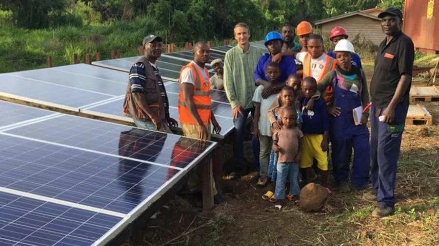
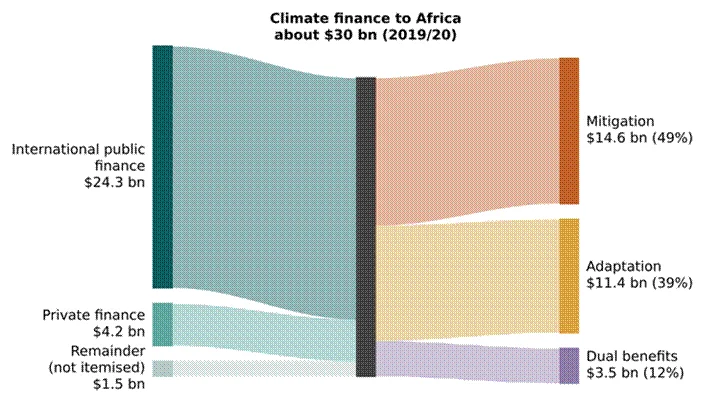
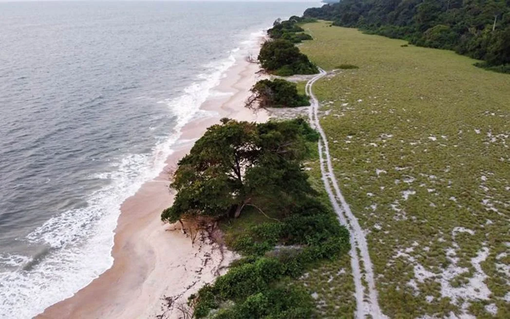
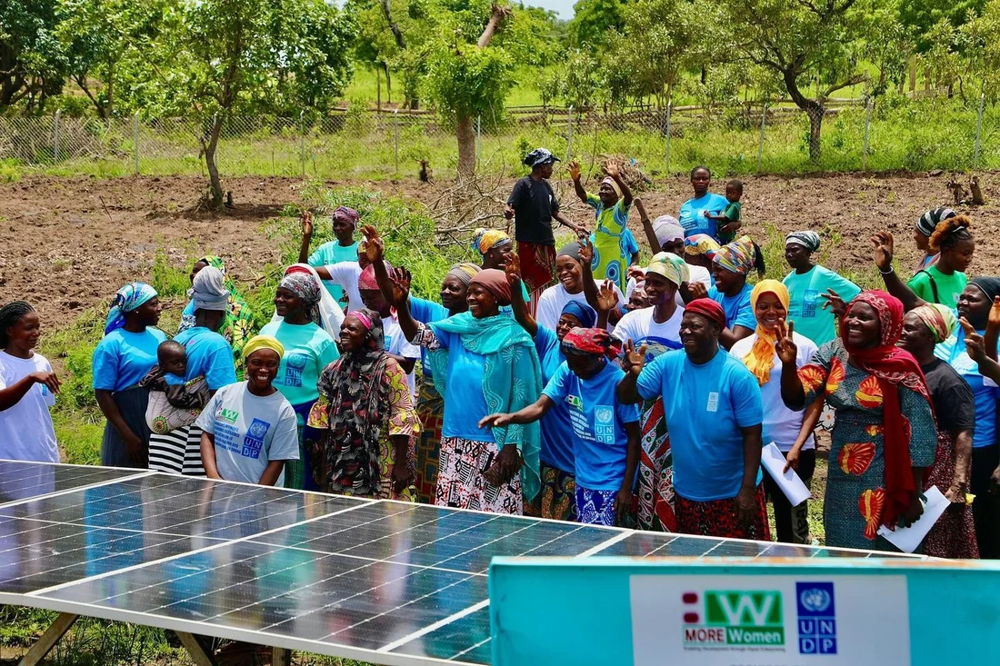

1. Introduction
At COP29, developed countries agreed on a goal of at least $300 billion a year, while at COP30 in Belém, the parties agreed to triple the finance for adaptation up to 2035 and raise $1.3 trillion per year by 2035. The progress on the $300 billion annual climate finance target has been widely condemned as inadequate because it falls catastrophically short of the actual economic needs of developing nations, which are estimated to be between $900 billion and $1.46 trillion annually. In September 2025, African leaders adopted the Addis Ababa Declaration at the Second Africa Climate Summit, where adaptation and resilience are the focus, and continentally-driven delivery mechanisms are supported. The summit, convened under the theme “Accelerating Global Climate Solutions: Financing for Africa's Resilient and Green Development,” was meant to shift focus away from viewing the continent as the passive beneficiary of climate promises to an active participant in shaping its climate future.

2. Problem Statement
Out of 53 African countries that provided Nationally Determined Contributions (NDCs), 51 out of the 53 provided data on the cost of implementing their NDCs, and the combined share of GDP of these countries is more than 93%. According to this data, it will cost around USD 2.8 trillion between 2020 and 2030 to implement Africa's NDCs. Financial flows stood at $30 billion in 2019/20 and grew by 48%, reaching $44 billion in 2021/22. Climate Policy Initiative (CPI) highlights that this is still equivalent to 23% of the annual requirement estimate (Figure 1). Different versions of estimates give different numbers, but the gap still remains multiple times current flows anyway.

More than half of climate finance is new debt rather than grants, and sub-Saharan Africa currently dedicates more to its external debt payments than to climate finance. This means that countries are borrowing money to protect themselves from climate impacts that could worsen their borrowing problems. Meanwhile, African governments are expected to spend about US$865 billion on servicing their debts over the same decade, nearly as much as they need for climate resilience. Private finance is only $8 billion, or 18% of flows, and government funding fell from $1.6 billion to $1 billion. Figure 2 shows that in 2019/20, adaptation received about $11.4 billion of roughly $30 billion, and that international public money supplied most of the total.

Africa receives about 2% of global clean energy spending, although it holds about a fifth of the world's population, and utility-scale clean energy projects pay borrowing costs two to three times higher than in advanced economies. CPI's assessment puts mitigation at 66% and adaptation at only 24% of identified needs. Adaptation is the area where grants matter most, because it produces protection rather than revenue to repay a loan.

3. Lessons from Comparable Cases
- Debt-for-nature swaps: By 2022, debt-for-nature deals had been executed in more than 30 nations and had restructured USD 2.5 billion of debt and funneled USD 1.2 billion into conservation projects. In 2022, debt-for-nature swaps were under evaluation for Gabon, Sri Lanka, Cape Verde, and Laos. The issuance of a $500 million blue bond by Gabon in 2023 bought back more than $430 million of international debt at lower rates, supported by a $500 million political-risk guarantee from the U.S. Development Finance Corporation (DFC). This deal is anticipated to create around $163 million worth of savings within 15 years and is part of an effort to safeguard 30 percent of the coastline of the country.
- Concessional capital: According to the IEA, about $28 billion of concessional finance could mobilize $90 billion a year in private investment in African energy by 2030.
- African-led platforms: The Addis meeting put forward several initiatives, such as the African Climate Facility, whose target was the generation of around $50 billion per year; the Africa Climate Innovation Compact, whose goal was to produce 1,000 financeable solutions by 2030; and a mechanism that involves the participation of the African development banks and commercial banks to reach $100 billion (Summit report).
- Loss and damage: The newly established fund has $788.8 million in pledges and a $250 million pilot, with requests capped at $20 million, against estimated needs of at least $724 billion a year across developing countries.

4. Analysis: What Works, What Does Not, and the Trade-Offs
The evidence points to five areas, summarized in Table 1. The first is grants for adaptation: adaptation rarely earns a return, thereby making lending for adaptation add further debt for the most financially fragile nations. The second is cheaper capital, as seen in the case of Gabon, which shows that guarantees can cut borrowing costs, and the IEA figures suggest small amounts of concessional money can pull in far larger private flows. The third is linking debt relief to climate outcomes, since debt service competes directly with resilience spending. The fourth is African delivery capacity: since domestic funding makes up just 10% of the flows, new facilities will need strong pipelines, governance frameworks, and transparency besides the headline targets. The fifth is measuring delivery, because pledges and progress have diverged.
Table 1. Shifting climate finance for Africa: from current patterns to required arrangements
| No. | Current Pattern (From) | Required Shift (To) |
|---|---|---|
| 1 | More than half of climate finance is debt | Grants and highly concessional finance, especially for adaptation |
| 2 | Borrowing costs 2–3 times higher than in advanced economies | Guarantees and concessional capital that lower the cost of capital |
| 3 | Debt service crowds out climate spending | Debt relief and swaps tied to climate and resilience outcomes |
| 4 | Domestic finance is only about 10% of climate flows | National budgets, pipelines and African institutions that carry projects |
| 5 | Progress on the $300bn goal reportedly lacking | Public tracking of grant-equivalent delivery against the $300bn goal |
Climate finance in Africa: current patterns and the shifts required to close the delivery gap.
What does not work: The valuation of loans at nominal face value as climate finance exaggerates the donor's effort because the loan must be repaid. Since more than 50 percent of financial flows take the form of debt, the numbers do not reflect anything about real disbursements. Similarly, targets without associated budgets and disbursement schedules suffer from the same drawback; they create expectations without leading to any real disbursements.
Trade-offs: Debt swaps represent only a fraction of total needs and impose conditions of conservation on borrowing countries. Guarantees shift risks to the guarantors and might favour bankable projects over adaptation efforts in poor and fragile environments. Africa-led funds will expedite the process but might duplicate other sources of financing in the absence of a specific mandate. Asking for grants might limit the total size because donors will respond to their request by cutting back on total disbursements.
5. Recommendations
1. Hold donors accountable to the $300B target and for delivering on adaptation, tripling with a delivery plan
Negotiators should seek annual milestones to 2035, a clear baseline for the tripling, and reporting that separates new money from relabeled aid.
2. Make adaptation finance grant-based
Press for adaptation money to arrive as grants or highly concessional terms, in line with the Addis analysis that it should stay largely non-debt-creating.
3. Leverage guarantees and concessional capital to reduce borrowing costs
Create a pipeline of projects for guaranteed support (like the Gabon model), focusing on the energy sector with IEA leverage.
4. Link debt relief and debt swaps with climate action
Focus on heavily indebted, climate-affected countries for debt swaps/debt relief to create space in budgets for resilience efforts and transparency in terms so that citizens see the exchange.
5. Build African delivery capacity
Assign the African Climate Facility and Innovation Compact specific mandates, publish pipelines/progress, and increase budget lines for climate at the national level.
6. Open the Loss and Damage Fund to African countries, including fragile states
Submit pre-prepared project proposals within the $20M limit and work to ensure conflict-affected countries are included when expanding the fund past the pilot phase.
7. Monitor and delivery report
Report climate finance in grant-equivalent terms, broken down by instrument and country.
Conclusion
Africa's climate finance has grown, but its structure remains the binding constraint. Flows rose 48% to about $44 billion in 2021/22, yet they still meet only 23% of estimated need, and most of the money still arrives as debt (CPI, 2024). Closing the gap therefore depends on changing the type of money as well as its volume. That means grants and highly concessional terms for adaptation and guarantees that lower borrowing costs, as in Gabon's blue bond backed by US political risk insurance (White & Case, 2023). It also means debt relief tied to climate outcomes, stronger African delivery capacity, and reporting in grant-equivalent terms. Against the COP29 goal of $300 billion a year and COP30's adaptation commitments, these shifts give negotiators concrete benchmarks, and the real test will be how much grant-equivalent finance is actually delivered.
